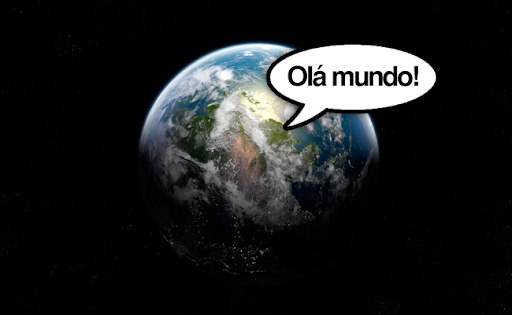
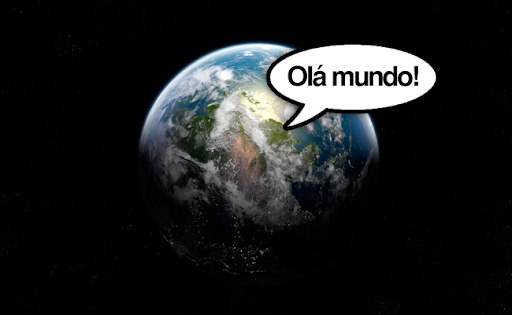

Olá mundo é um famoso programa de computador que imprimi "Olá mundo!" (ou " hello world!"), usualmente seguindo de uma qurbra de linha, com algumas variaçõs como inexistencia do ponto de exclamação e letras em minúscula, no dispositivo de saída.
É utilizdo como um teste ou como um exemplo de código de uma linguagem.
 
